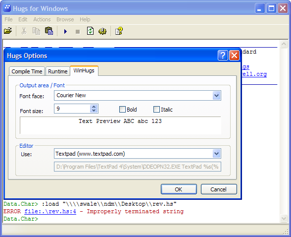
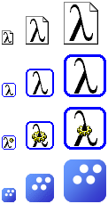
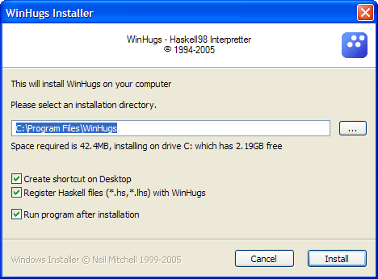
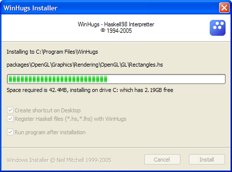

The May 2006 release of Hugs includes a rewritten version of WinHugs, and complete Windows libraries. I am intending to maintain WinHugs and Hugs on Windows, but do not have any new substantial new features planned. Please report all bugs to hugs-bugs AT haskell DOT org.
I have rewritten WinHugs to make it better. For general details see the Haskell wiki.
And some of the new artwork I have done.
And some screeshots of the new installer.
  <:downloads> <:release "http://cvs.haskell.org/Hugs/pages/downloading.htm">